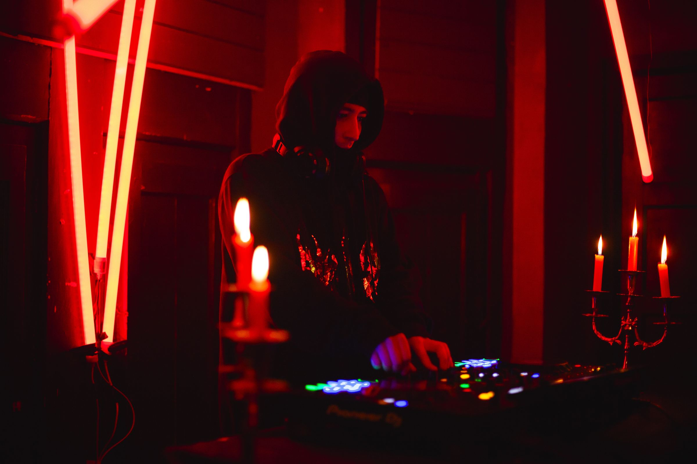

Necropolis
Halloween · BlackHome Kolective

DJ y productor de Industrial Hard Techno. 160–180 BPM, desde Talca, Chile.
Matías Paredes Ortiz, productor musical más conocido como Skatywalls, comenzó en el mundo del DJ a mediados de 2025, colaborando con productoras como Gárgolas, Puntadasnen, Visual Techno, Blackhome Kolective y Noise Prod, entre otras. Skatywalls se adentró rápidamente en la escena talquina por el gran sonido crudo, pesado e industrial que entrega en sus presentaciones.
Skatywalls busca entregar un set que se convierta en una explosión de energía en cada drop, con una selección musical única y rebuscada que incluye tracks propios.
Entrega kicks demoledores, screeches envolventes y subidas llenas de tensión, combinando varios efectos del setup.
Skatywalls empezó a producir en 2017 y actualmente es productor oficial de la BSG, participando en varios proyectos musicales también fuera del techno.
En 2024 se adentró en la producción de techno, aplicando todo lo aprendido con el tiempo en otros géneros. Poco después lanzó su primer release en SoundCloud, 15 HORAS, mezclando el schranz con el punch del industrial.
Actualmente se desenvuelve en el industrial techno y el hardstyle, con tracks como Heavy Fireworks y All Gas No Breaks, entre otros.
Halloween · BlackHome Kolective